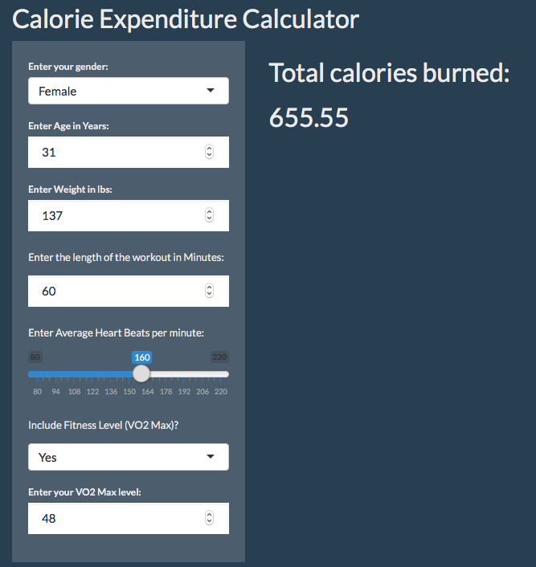

Jeremy Sidwell
6/16/2019
The calorie expenditure web application estimates total calories burned during a workout. The predictive model used to estimate Calories is sourced from the March 2005 publication of the Journal of Sports Sciences, Prediction of energy expenditure from heart rate monitoring during submaximal exercise.
The calorie calculator provides the user a reasonable estimate for calories burned during exercise to support the user’s weight and nutrition management goals.
Source code for this presentation and the web application can be found at the following link: https://github.com/runinlimbo/Coursera---DDP---Week4-Project
Note: This web application has been created and submitted as the Week 4 course project for the Coursera.org online course, Developing Data Products.
Note: The fitness level allows the user to enter their estimated VO2 Max level if the user chooses to include the Fitness Level in the calculation.
The reactive output provides the estimated Calories burned based on user input and the formula derived in the Journal of Sports Sciences, which is executed in the application server. Example below:

Fitness Calorie Formula =
Female:\[\frac{Time *(Age * 0.2735 + \frac{Weight}{2.20462}*0.1032 + Heart Rate * 0.4498+ VO2*0.3802 - 59.3954)}{4.184}\] Male: \[\frac{Time *(Age * 0.2713 + \frac{Weight}{2.20462}*0.3942 + Heart Rate * 0.6344+ VO2*0.4044 - 95.7735)}{4.184}\]
Non-Fitness Calorie Formula =
Female:\[\frac{Time *(Age*0.0740 - \frac{Weight}{2.20462}*0.1263 + Heart Rate * 0.4472 - 20.4022)}{4.184}\] Male:\[\frac{Time *(Age*0.2017 + \frac{Weight}{2.20462}*0.1988 + Heart Rate * 0.6309 - 55.0969)}{4.184}\]
NOTE: Details on the development of the above equations can be found in the Journal of Sports Sciences research paper referenced on slide 2.